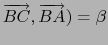

triangle_rectangle(A,B,[P,k]) renvoie et trace dans le plan
ABP, le triangle ABC rectangle en A : ce triangle est direct si k > 0,
indirect si k < 0 et est tel que AC = | k|*AB.
Ainsi si l'angle
( radians
(ou degrés), on a
tan( ) = k.
) = k.
On remarquera que si C est le transformé de B dans la similitude de
centre A de rapport | k| et d'angle
(k/| k|)* /2.
/2.
On tape :
A:=point(0,0,0)
B:=point(3,3,3)
P:=point(0,0,3)
Q:=point(0,0,-3)
Puis on tape :
triangle_rectangle(A,B,[P,2])
On obtient :
Dans le plan ABP, le triangle ABC direct, rectangle en A tel que AC=2*AB
On tape :
triangle_rectangle(A,B,[P,-2])
On obtient :
Dans le plan ABP, le triangle ABC indirect, rectangle en A tel que AC=2*AB
- si il a quatre arguments, le dernier argument est le nom d'une
variable qui servira à définir le troisième sommet.
On tape :
triangle_rectangle(A,B,[P,2],C)
On obtient :
Dans le plan ABP, le triangle rectangle de sommets ABC
On tape :
simplify(coordonnees(C))
On obtient :
[-(3*sqrt(2)),-(3*sqrt(2)),6*sqrt(2)]